材料
※粉量を変えると自動計算されます
セミドライトマト
生地
フィリング(具材)
作り方
セミドライトマト
STEP 1
ミニトマトを半分に切り、断面の水気をとる
ミニトマトを半分に切り、断面から出てくる水分をキッチンペーパーで軽く押さえます。あらかじめ水分を減らしておくことで、オーブンで乾燥させやすくなります。
ミニトマトを半分に切り、断面から出てくる水分をキッチンペーパーで軽く押さえます。あらかじめ水分を減らしておくことで、オーブンで乾燥させやすくなります。
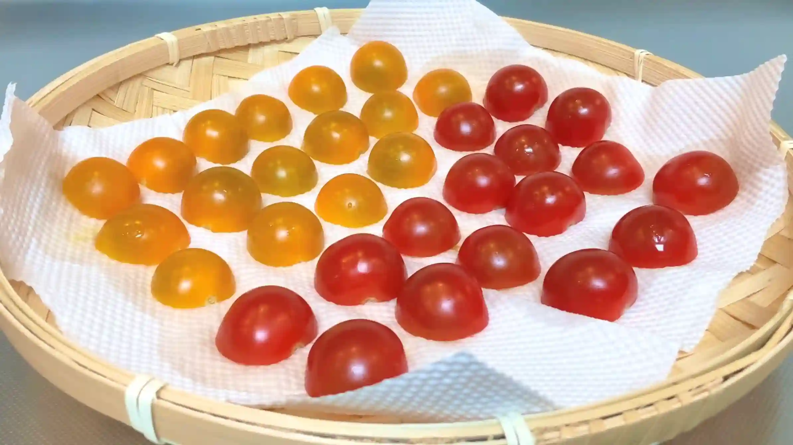
STEP 2
天板に並べて塩を振る
ミニトマトを切り口を上にして並べ、塩を振ります。塩を振ることでトマトから水分が出やすくなり、旨みの詰まったセミドライトマトになります。
ミニトマトを切り口を上にして並べ、塩を振ります。塩を振ることでトマトから水分が出やすくなり、旨みの詰まったセミドライトマトになります。
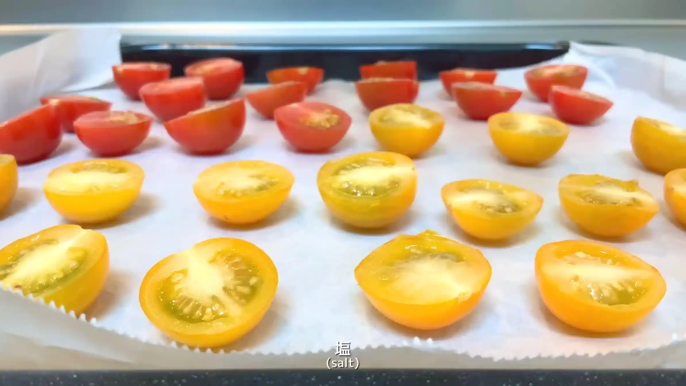
STEP 3
オーブン上段130℃で70分焼く
トマトの水分を飛ばしながら、セミドライの状態に仕上げます。完全に乾燥させず、表面がしわっとして中に水分が残るくらいが目安です。
トマトの水分を飛ばしながら、セミドライの状態に仕上げます。完全に乾燥させず、表面がしわっとして中に水分が残るくらいが目安です。
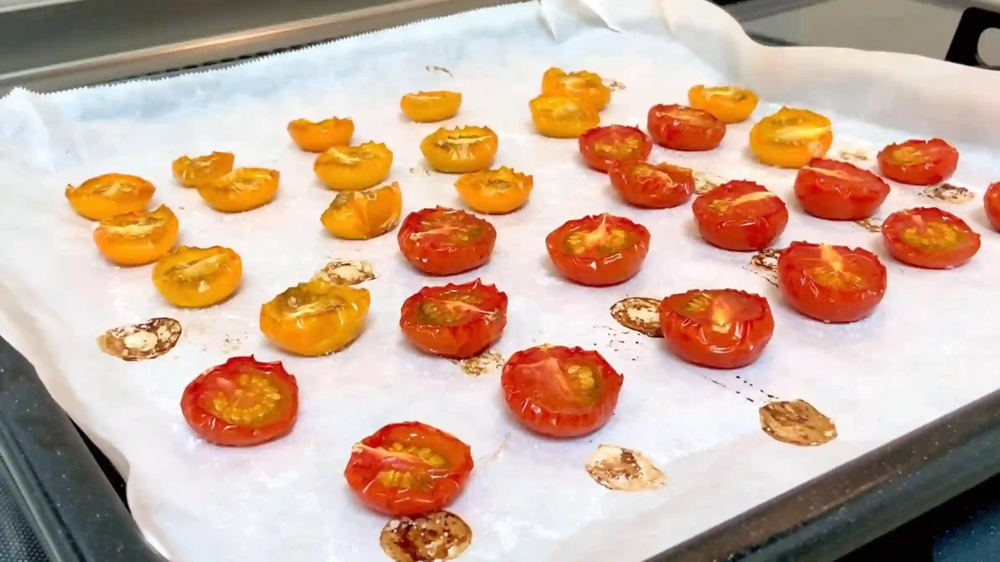
生地
STEP 1
ホームベーカリーで生地を作る
ホームベーカリーに材料をセットし「生地コース」で生地を作ります。コースが終わったら、次の作業に進みます。
ホームベーカリーに材料をセットし「生地コース」で生地を作ります。コースが終わったら、次の作業に進みます。
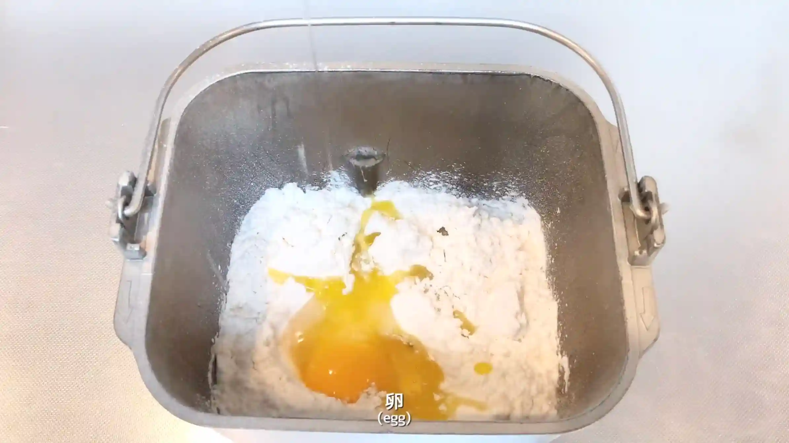
STEP 2
生地を取り出して丸め、ボウルをかぶせて15分おく
生地を丸めて表面を整え、15分ほど休ませます。生地を休ませることで伸ばしやすくなり、次の成形がしやすくなります。
生地を丸めて表面を整え、15分ほど休ませます。生地を休ませることで伸ばしやすくなり、次の成形がしやすくなります。
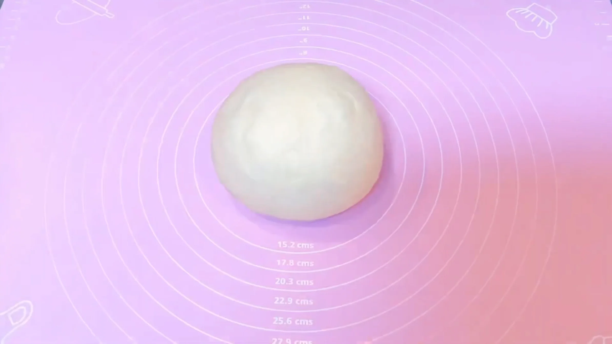
STEP 3
生地を30㎝×45㎝に伸ばす
生地を四角に伸ばす際は、中央から左上、右上、左下、右下へと、めん棒を外側に向かって動かします。中央から四隅へ均等に伸ばしていくと、自然と四角い形に整っていきます。
生地を四角に伸ばす際は、中央から左上、右上、左下、右下へと、めん棒を外側に向かって動かします。中央から四隅へ均等に伸ばしていくと、自然と四角い形に整っていきます。
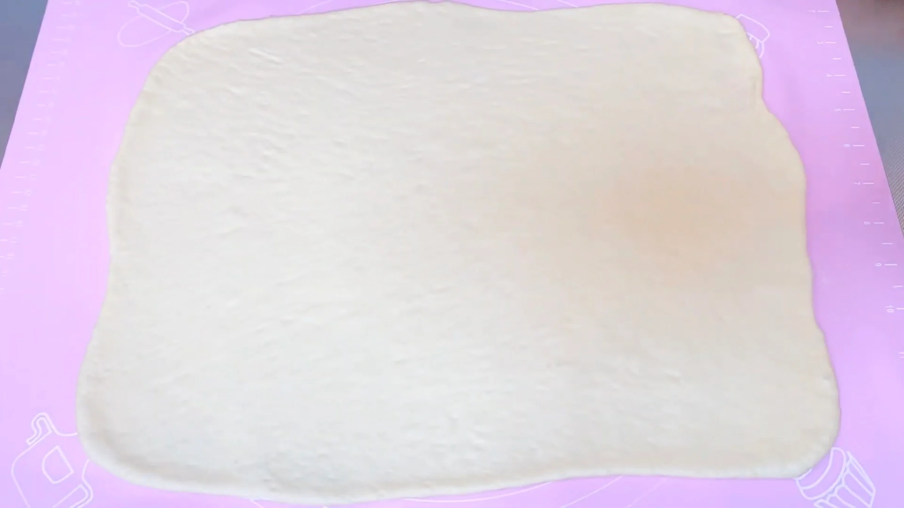
STEP 4
生地全体に具材をのせる
お好きな具材を生地に散らします。端まで具材を散らすと、巻き終わりを閉じにくくなるため、少し余白を残しておきます。水分の多い具材は生地がベタつきやすく、焼き上がりにも影響するため、水分の少ない具材を選ぶのがおすすめです。
お好きな具材を生地に散らします。端まで具材を散らすと、巻き終わりを閉じにくくなるため、少し余白を残しておきます。水分の多い具材は生地がベタつきやすく、焼き上がりにも影響するため、水分の少ない具材を選ぶのがおすすめです。
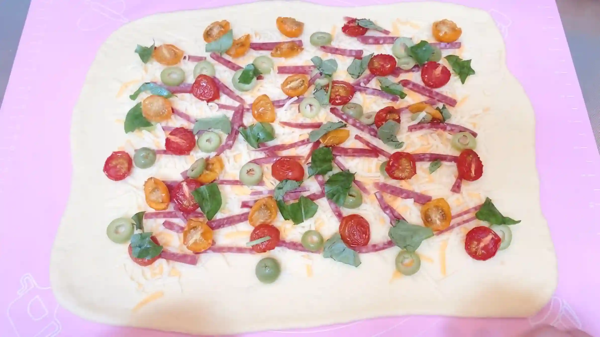
STEP 5
生地を巻く
具材が多いと生地がすべって巻きづらいですが、巻き始めに生地で芯を作ると巻きやすくなります。具材を包み込むように、端からしっかり巻いていきます。
具材が多いと生地がすべって巻きづらいですが、巻き始めに生地で芯を作ると巻きやすくなります。具材を包み込むように、端からしっかり巻いていきます。
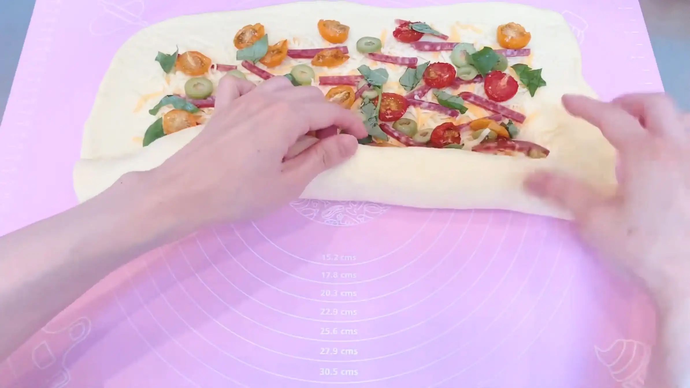
STEP 6
巻き終わりを閉じる
巻き終わりの生地を指でしっかりつまみ、開かないように閉じます。両端も具材がはみ出してこないように、しっかり閉じておきます。
巻き終わりの生地を指でしっかりつまみ、開かないように閉じます。両端も具材がはみ出してこないように、しっかり閉じておきます。
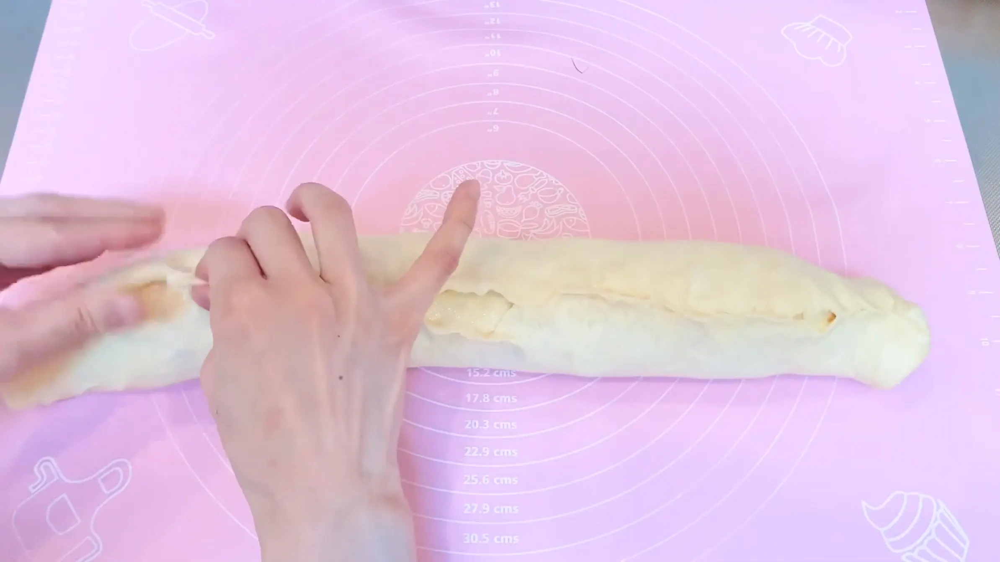
STEP 7
とじ目を下にして、オーブンシートにのせる
巻き終わりが開かないようにとじ目を下にして、オーブンシートにのせます。生地を成形してからのせると、整えた形が崩れてしまうため、オーブンシートの上で成形していきます。
巻き終わりが開かないようにとじ目を下にして、オーブンシートにのせます。生地を成形してからのせると、整えた形が崩れてしまうため、オーブンシートの上で成形していきます。
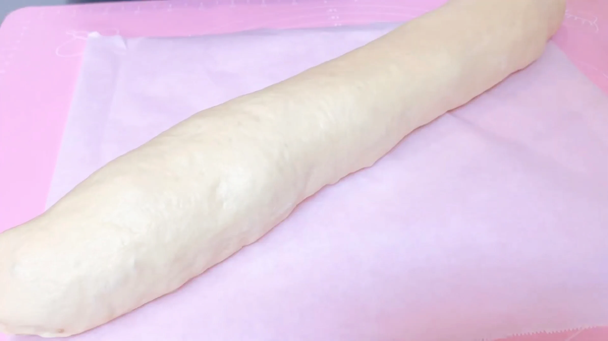
STEP 8
端は切らずに残したまま、高さの半分まで切れ込みを入れる（[動画 08:14]）
包丁で切れ込みを入れやすいように、粉をふります。生地がほどけてしまうので、両端は切らずに残し、高さの半分まで切れ込みを入れます。
包丁で切れ込みを入れやすいように、粉をふります。生地がほどけてしまうので、両端は切らずに残し、高さの半分まで切れ込みを入れます。
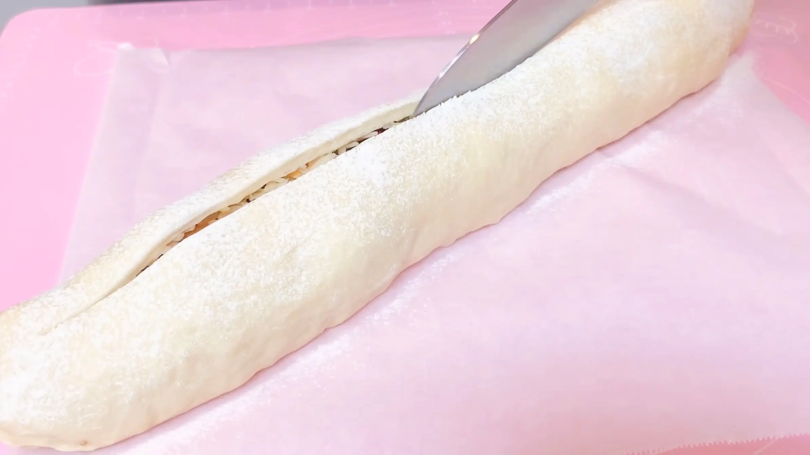
STEP 9
S字型に成形する（[動画 09:10]）
生地の中心から、左右に渦巻きを作るように巻きます。S字型が崩れてこないように、生地の両端をしっかりと中に巻き込むのがポイントです。
生地の中心から、左右に渦巻きを作るように巻きます。S字型が崩れてこないように、生地の両端をしっかりと中に巻き込むのがポイントです。
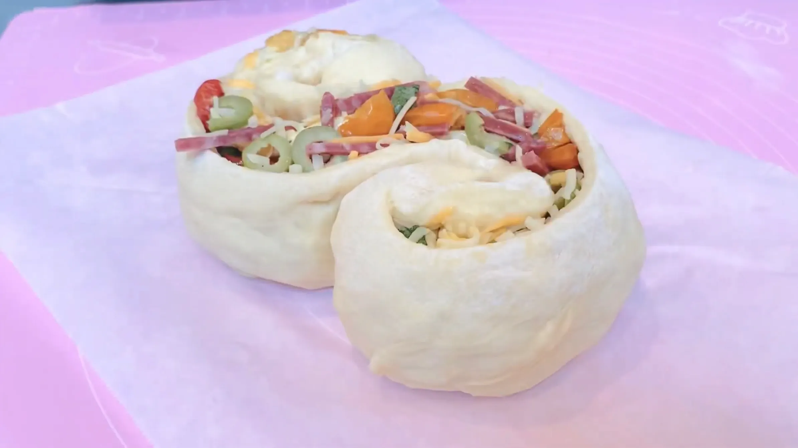
STEP 10
天板にのせ、ラップをして室温で40分程おく
成形した生地を二次発酵させます。発酵時間は室温によって変わるため、時間は目安とし、生地がふっくらと膨らんだら、次の工程へ進みます。
成形した生地を二次発酵させます。発酵時間は室温によって変わるため、時間は目安とし、生地がふっくらと膨らんだら、次の工程へ進みます。
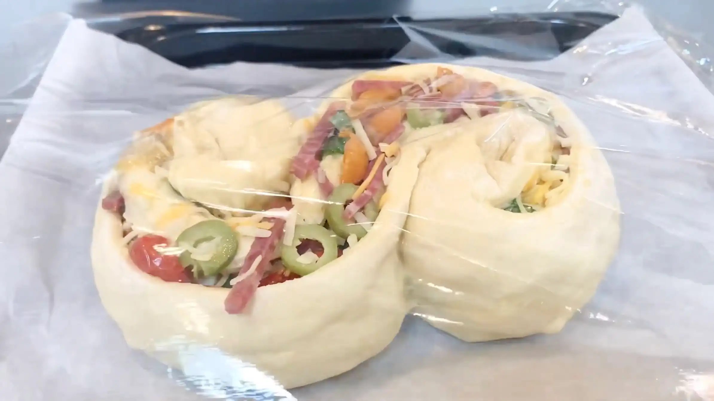
STEP 11
オーブンを200℃に予熱する
焼く直前にオーブンを200℃に予熱します。
焼く直前にオーブンを200℃に予熱します。
STEP 12
オーブン200℃で25分焼く
白パンらしい淡い焼き色にするなら、もう少し低い温度で焼く方法もありますが、このパンは具材が多く、生地も大きいため、私のオーブンでは200℃で25分焼くことで、ほんのり焼き色のついた白パンに仕上がりました。オーブンによって焼き上がりが異なるため、表面の色づきやパンの状態を見ながら調整してください。
白パンらしい淡い焼き色にするなら、もう少し低い温度で焼く方法もありますが、このパンは具材が多く、生地も大きいため、私のオーブンでは200℃で25分焼くことで、ほんのり焼き色のついた白パンに仕上がりました。オーブンによって焼き上がりが異なるため、表面の色づきやパンの状態を見ながら調整してください。
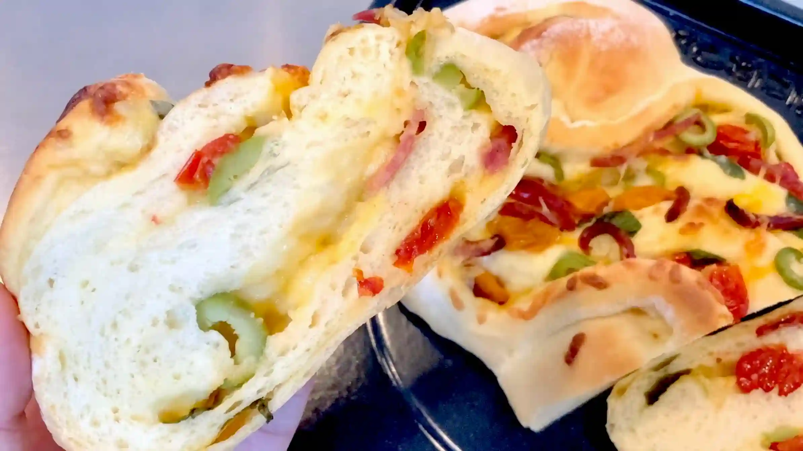
動画でチェック
おいしく作るためのワンポイントコラム
こんにちは、おなおドーナツです！
今回は、イタリアのお惣菜パン『パーネ・ビアンコ』を作っていきます！『パーネ・ビアンコ』とは、イタリア語で「白いパン」という意味。一見シンプルな名前に思えますが、実は生地にバジルやサラミ、チーズなどの具材を巻き込み、美しい「S字型」に成形して焼き上げる、とっても華やかなパンです。それでは、おいしく仕上げるためのポイントを3つご紹介します。
① 手作りセミドライトマト
今回、ぜひおすすめしたいのが、おうちで簡単に作れる手作りセミドライトマトです。半分に切ったミニトマトに塩を振って、オーブン130℃で70分じっくり焼くだけと作り方はとてもシンプル。じっくり水分を飛ばすことで、トマトの甘みと酸味、そして旨味がギュッと凝縮されます。これがとてもパンに合い、イタリア感がアップするので、もしよければ具材として入れてみてください。
② 具材の選び方
旨味のセミドライトマト、コクのチーズ、香りのバジル、スパイシーなサラミ、と、今回はイタリア感満載な具を入れましたが、決まりはないので基本的には好きな具材を入れるのが良いかと思います。ただ、水分が多い具材を入れると生地がベタつき、生焼けになってしまうこともあるので、具材は水分少ないものを選ぶと良いかと思います。
③ S字成形のコツ
広げた生地に具材をのせて端からくるくると巻き、高さの半分までスーッと切れ込みを入れてから、端と端を交互に曲げるようにしてS字に整えていきます。ここで、切れ込みを深く入れすぎると、中の具材がどさっと飛び出してしまうので、切れ込みは半分まで入れるのがポイントです。
日本ではあまり馴染みのないパーネ・ビアンコですが、海外のSNSでは可愛くて美味しそうなパンがたくさんアップされています。ぜひ、皆さんも検索してみてください。それでは、おうちパン作りの時間を一緒に満喫しましょう！
今回は、イタリアのお惣菜パン『パーネ・ビアンコ』を作っていきます！『パーネ・ビアンコ』とは、イタリア語で「白いパン」という意味。一見シンプルな名前に思えますが、実は生地にバジルやサラミ、チーズなどの具材を巻き込み、美しい「S字型」に成形して焼き上げる、とっても華やかなパンです。それでは、おいしく仕上げるためのポイントを3つご紹介します。
① 手作りセミドライトマト
今回、ぜひおすすめしたいのが、おうちで簡単に作れる手作りセミドライトマトです。半分に切ったミニトマトに塩を振って、オーブン130℃で70分じっくり焼くだけと作り方はとてもシンプル。じっくり水分を飛ばすことで、トマトの甘みと酸味、そして旨味がギュッと凝縮されます。これがとてもパンに合い、イタリア感がアップするので、もしよければ具材として入れてみてください。
② 具材の選び方
旨味のセミドライトマト、コクのチーズ、香りのバジル、スパイシーなサラミ、と、今回はイタリア感満載な具を入れましたが、決まりはないので基本的には好きな具材を入れるのが良いかと思います。ただ、水分が多い具材を入れると生地がベタつき、生焼けになってしまうこともあるので、具材は水分少ないものを選ぶと良いかと思います。
③ S字成形のコツ
広げた生地に具材をのせて端からくるくると巻き、高さの半分までスーッと切れ込みを入れてから、端と端を交互に曲げるようにしてS字に整えていきます。ここで、切れ込みを深く入れすぎると、中の具材がどさっと飛び出してしまうので、切れ込みは半分まで入れるのがポイントです。
日本ではあまり馴染みのないパーネ・ビアンコですが、海外のSNSでは可愛くて美味しそうなパンがたくさんアップされています。ぜひ、皆さんも検索してみてください。それでは、おうちパン作りの時間を一緒に満喫しましょう！


今回は、イタリアのお惣菜パン『パーネ・ビアンコ』をご紹介します！華やかなS字の成形が特徴で、トマト、チーズ、バジルなどイタリアのおいしさがたっぷり詰まったパンです。コラムでは「手作りセミドライトマト」「具材の選び方」「S字成形のコツ」の3つのポイントをご紹介します。